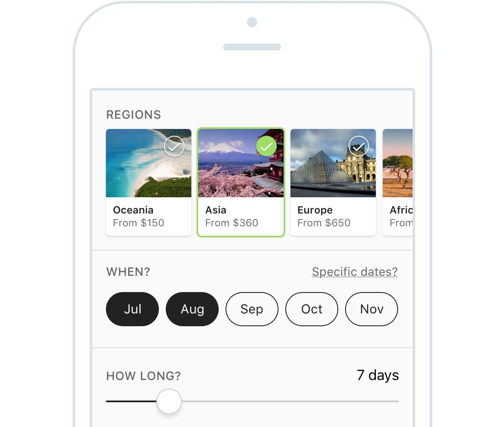

Rethinking flight search
I spoke at a global design thinking event where the challenge was to rethink how travellers searched for flights and to document the design thinking process used.

I spoke at a global design thinking event where the challenge was to rethink how travellers searched for flights and to document the design thinking process used.
Design in motion is a global event held yearly by the folks at General Assembly. The idea of it is to see how real designers solve a given problem using the design thinking process. This year’s brief was to rethink flight search and we only had a few weeks to come up with a solution. I teamed up with one of my colleagues, Damian Norton, to put together our flight search concept. Three other designers, Adrian Ciaschetti, Sash Singh and Emma Lundgren, also presented their concepts and how they came up with them.
The event was on 30 June 2016 and it was a great night out at the Powerhouse Museum with some interesting concepts presented. There were a bunch of people who couldn’t make it to the event that night, so I wrote this article to document our flight search concept and how we used design thinking to come up with it. I hope this process comes in handy for your next project, and I’m also keen to hear your feedback about our design concept.
Design thinking is basically a user-centric methodology for problem-solving. It commonly consists of five repeatable steps: empathise, define, ideate, prototype and test. It’s not meant to be a linear step-by-step process but a cyclical one in which steps can be repeated as needed. I’ll take you through our flight search concept so that you can see our full design thinking process in more detail.
Empathy is simply the ability to understand and share the feelings of others. It’s a huge part of user experience design as we’re designing for our users and we need to understand their needs. In order to tackle this flight search problem, we interviewed several travellers to find out how they currently searched for flights and planned their trips. We also looked at competitors such as Skyscanner, Expedia and Zuji to learn how travellers used these tools and what their pain points were. We gained a bunch of insights from these interviews and created an affinity diagram to discover common themes and patterns.
The common insights that arose were:
This is where we process our findings from the empathy stage and construct a point of view based on the user’s needs. We define the problem we’re solving and who we’re solving it for. It’s also important to make sure that we have a way to measure the success or failure of our ideas.
From our research we defined two personas, a primary and a secondary: Lisa, a leisure traveller needing inspiration on where to go next, and Waylon, an A-to-B traveller who knows exactly where he wants to go. Our flight search concept would be optimised for our primary persona while always still catering to our secondary persona.
From our competitor research it was pretty clear that most of the flight search apps out there today are targeted towards our secondary persona – travellers who already know exactly where they want to go. We saw an opportunity to focus on travellers who hadn’t yet decided where to go and needed some inspiration. Our aim was to design a tool that helped these travellers decide where to fly for their next holiday.

By this point we knew what the problem was and who we were designing for. It was now time for the fun part: coming up with ideas to solve the problem. During our empathy phase we learned that most travellers research holiday flights in their downtime on their mobiles, so we decided to design an app.
One of the easiest and most effective ways of brainstorming ideas is through sketching. We started by sketching as many different ideas as we could think of, some of which can be seen above. Once we had a bunch of them, we discussed them in more detail and pulled out the key ideas.
The idea that we were most excited about was the broad interest-based search (seen in the above sketches). This basically allows travellers, who don’t yet know where they want to go, to compare flights to a range of destinations based on their interests, budget and when they would like to travel. Let’s say that you were thinking of flying to a beach destination somewhere in Europe for under $1,000. This broad interest-based search would allow you to compare flights to a range of beach destinations in Europe. In contrast, most flight search apps only allow you to compare flights to a single destination at a time.
We built on this idea further and sketched out more detailed wireframes of the app which we used to create our prototype below. To save time, we designed the prototype using adapted components from a simple iOS UI kit.
A prototype is basically a simulation of the final product. Prototypes are great because they’re a cheap and quick way of testing whether your idea will actually work, before investing time and money into building it. We created a quick prototype using Invision. If we had more time, we would have created a more functional HTML prototype to better represent the key interactions.
Let’s imagine that we‘re planning our next holiday and we want to go to a beach destination somewhere in Asia. We want to go during July or August for around a week and our budget is $1,000. I’ll use this example scenario to take you through our flight search prototype in a bit more detail below.
In the screens above, we’re presented with a search helper form under the search box at the top. This search form allows us to perform our ‘broad interest-based search’ that we talked about previously. We’ll tap on the beaches card in the interests row, followed by the Asia card in the regions row. We’ll then fill in the rest of the form based on our ‘beaches in Asia’ example scenario above.
Once we’ve filled out the initial search form and tapped on the ‘Inspire me’ button, we’re presented with a list of beach destinations in Asia as requested (seen in the screen above). The cheapest one-week return flights during July and August are pulled out for us to compare. There are also content-rich destination guides to help us decide on the destinations we’re most interested in.
Once we’ve selected the destinations we’re interested in, we can save the search for later and also opt in to receive email alerts (as seen in the screen below). We’ll then tap on the ‘Search flights’ button and proceed to the flight results page below. The top return flights are displayed, based on a combination of price, flight duration and number of stops. We’re able to compare flights to all of our chosen destinations at the same time, rather than being limited to comparing flights to a single destination. It’s worth noting that we didn’t actually have much time to spend on the flight results component of the user journey, as we were concentrating on the search component before this.
Testing is the part where we validate whether our design concept works or not. We were pretty short on time, but we managed to guerrilla-test our prototype on five people. We put together a test scenario, similar to the example scenario mentioned above, and observed people as they searched for flights. We found that people liked being able to see where their friends had travelled and also found the content-rich destination guides helpful. Being able to perform a broad search and compare flights to multiple destinations was received really well too, which was great to see.
I’ve just taken you through one iteration of our design thinking process. Here’s a quick recap: we empathised with our user to discover their needs, defined the problem, brainstormed ideas, created a prototype and validated our assumptions through user testing. We learned a lot from our first iteration; the idea is to keep repeating this process until you’re confident that your solution will work out in the real world.
I hope you found our design thinking process helpful, and I’m always keen to hear feedback on our flight search design concept too, via Twitter.